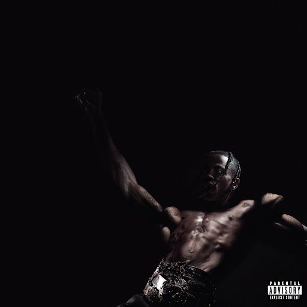

Home | shows | loja
travis scott

Travis Scott, cujo nome real é Jacques Bermon Webster II, é um dos nomes mais influentes e polêmicos da música atual. Nascido em 30 de abril de 1991, em Houston, Texas, o rapper, cantor e produtor musical se destacou por seu estilo único, que mistura trap, hip-hop e elementos experimentais, criando um som atmosférico e cheio de energia. Sua carreira decolou quando começou a trabalhar como produtor para artistas como Kanye West e Jay-Z, mas foi com seus próprios projetos que ele conquistou o público. Seu mixtape de estreia, Owl Pharaoh (2013), chamou atenção, mas foi Rodeo (2015), seu primeiro álbum, que o colocou no mapa, especialmente com o hit Antidote. Nos anos seguintes, Travis Scott consolidou sua fama com Birds in the Trap Sing McKnight (2016) e, principalmente, Astroworld (2018), seu álbum mais aclamado, que rendeu sucessos como SICKO MODE (com Drake) e BUTTERFLY EFFECT. Além da música, ele se tornou conhecido por suas performances eletrizantes, muitas vezes incluindo efeitos visuais impressionantes e uma energia contagiante. Suas colaborações com artistas como Drake, The Weeknd, Kid Cudi e Bad Bunny só aumentaram seu alcance. Fora dos palcos, Travis Scott também se destaca no mundo da moda, com parcerias de sucesso com a Nike, incluindo edições especiais dos tênis Air Jordan 1 e Air Max, além de uma coleção com a Dior. Ele também é o fundador da gravadora Cactus Jack, responsável por lançar artistas como Don Toliver e Sheck Wes. Outro projeto importante é o Astroworld Festival, um evento anual em Houston que, infelizmente, ficou marcado pela tragédia em 2021, quando uma superlotação durante seu show resultou em mortes e feridos, levando a processos e controvérsias. Na vida pessoal, Travis Scott tem um relacionamento com Kylie Jenner, com quem tem dois filhos: Stormi e Aire. Sua família frequentemente aparece nas redes sociais, misturando sua vida artística com a pessoal. Em 2023, ele lançou UTOPIA, seu quarto álbum, que manteve sua pegada inovadora, com participações de Drake, Playboi Carti e outros. Mesmo com altos e baixos, Travis Scott segue como uma figura central na cultura pop, sempre gerando discussões e influenciando uma nova geração de artistas.
Travis Scott construiu sua carreira através de álbuns marcantes que redefiniram o trap moderno. Rodeo (2015) foi sua estreia ousada, misturando batidas pesadas e atmosferas cinematográficas em faixas como Antidote e 90210. Em 2016, Birds in the Trap Sing McKnight trouxe um som mais melódico, com destaque para goosebumps (com Kendrick Lamar), consolidando seu estilo único. O ápice veio com Astroworld (2018), um projeto aclamado que mesclou produção inovadora e colaborações de peso, como SICKO MODE (com Drake). Em 2023, UTOPIA manteve sua essência experimental, explorando novos sons em faixas como FE!N (com Playboi Carti). Cada álbum reflete sua evolução, tornando-o um dos artistas mais influentes da geração.
